| 日付 | 2024年4月27日（土） - 2024年4月29日（月） | ||||
|---|---|---|---|---|---|
| 山域 | 越後 | ||||
| メンバー | 家族（妻、長男・10歳） | ||||
| 山行形態 | 子連れ2泊3日キャンプ | ||||
| アクセス | 車 | ||||
| ルート (Map2) |
|
3日目
本日も6時起床。テントをたたんで出発する。
曇りのち雨の予報だったが思いのほか晴れている。
このキャンプ場は最低限の設備しかないが、きれいでリーズナブルで
すいていて、良いキャンプ場だった。
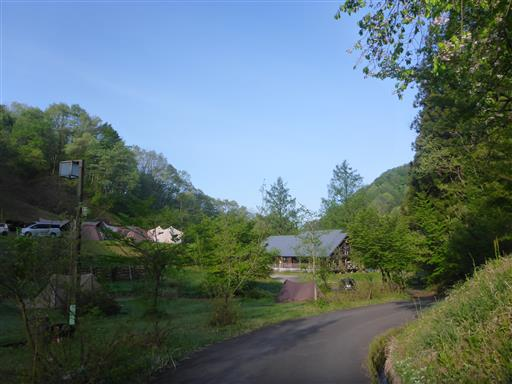
本日は弥彦山に登る予定。
車を弥彦山に向けて走らせると、大きな大きな鳥居が見えてくる。
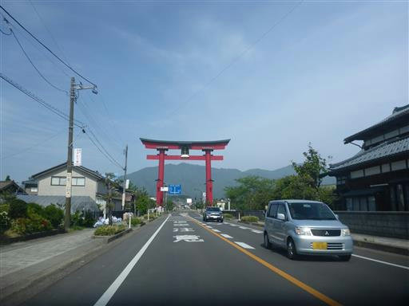
彌彦神社前にある広大な駐車場に車を停める。標高40m。
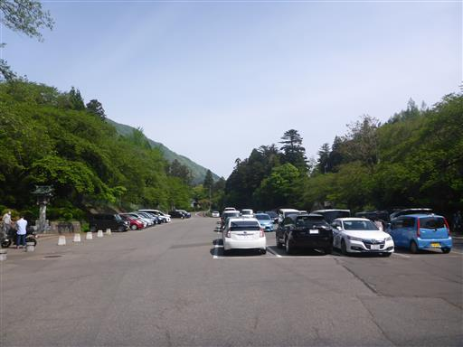
参拝してから登山を行うことにする。
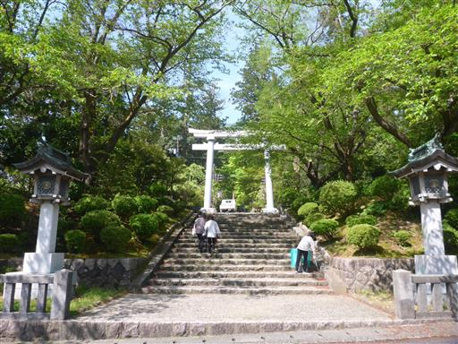
東参道を歩く。新緑が目に眩しい。
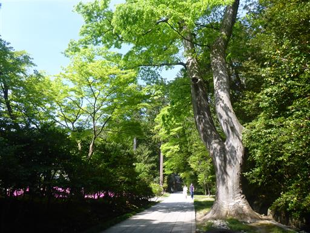
こちらは芝桜。
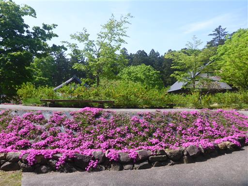
大きな灯篭が並んでいる。
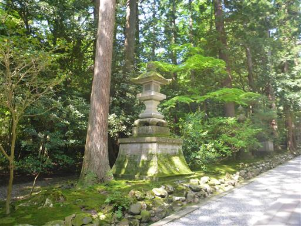
トイレに立ち寄る。神社の中にあるにしては、ずいぶんと近代的なデザインのトイレだ。
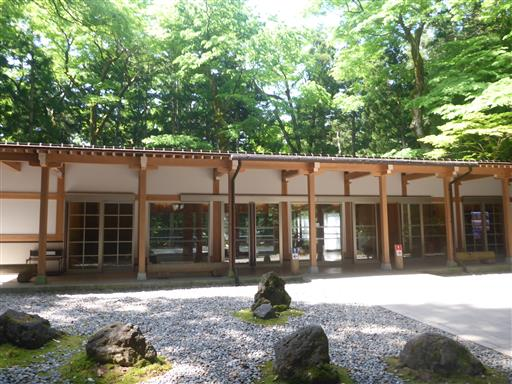
随神門を潜る。
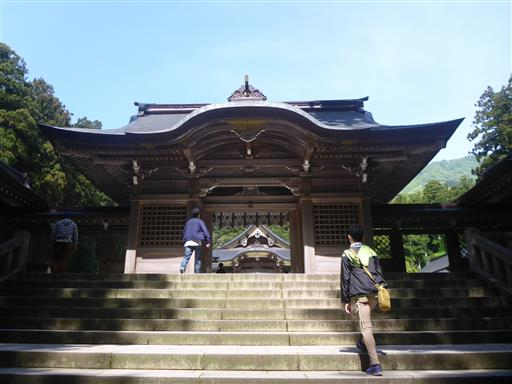
本殿。背後にそびえるのが御神体の弥彦山だ。
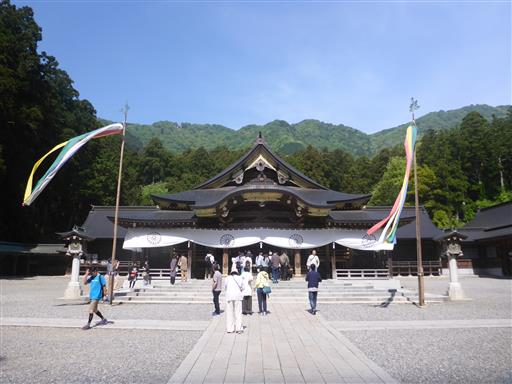
参拝を済ませたら山に向かう。立派な杉が立ち並んでいる。
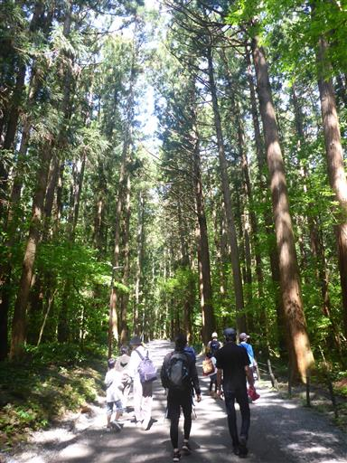
ロープウェイの道と分かれて登山道方面へ。
意外に登山道に向かう人の方が多い。
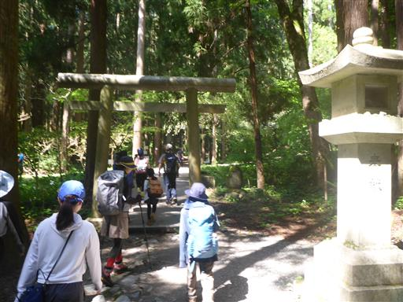
登山道は広くて歩きやすい。そして人が多い。
家族連れも多く、多くの人に親しまれている山のようだ。
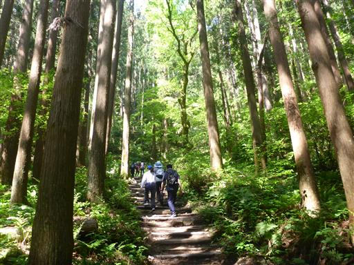
あっという間に一合目に到着。低い山だが合目表記がある。
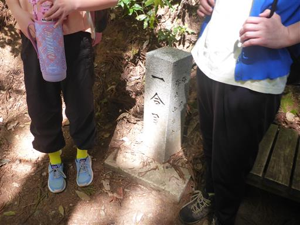
新緑のトンネル。
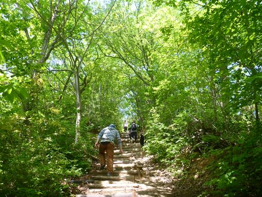
まだ空は青い。青空の元で登れてラッキーだ。
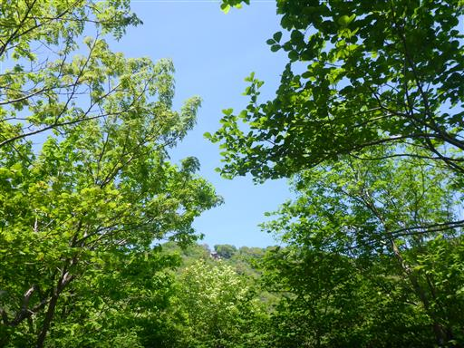
五合目にある鳥居を潜る。
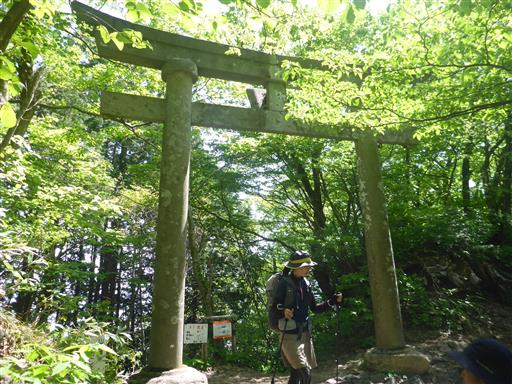
登山道の脇にはシャガの花がたくさん咲いている。
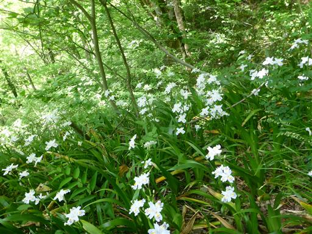
ちょっとした岩場地帯。登山道は非常によく整備されている。
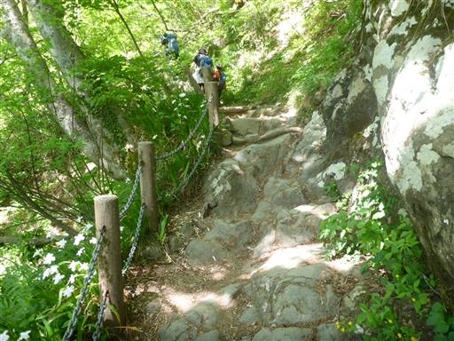
沢に架かる橋。
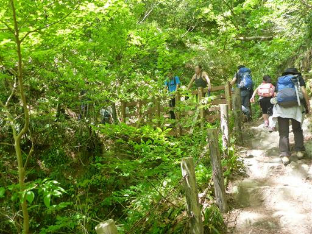
小さな沢には水がチョロチョロと流れている。
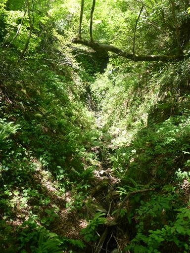
里見の松に到着。小さな休憩所だ。
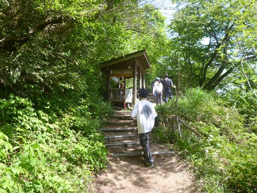
越後平野の向こうに粟ヶ岳が見える。昨日はあちらからこちらを見ていた。
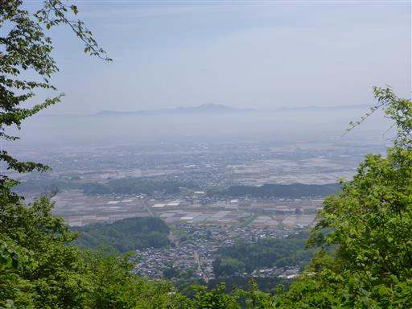
水飲み場。手を洗って体を冷やす。
山頂部は人が多いので飲むのはやめておく。
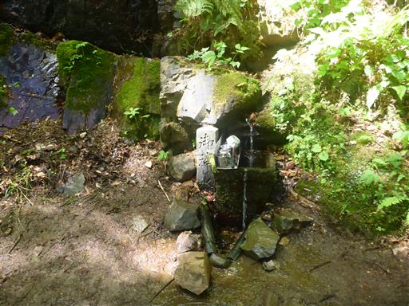
九合目に到着。ここでロープウェイ山頂駅からの道と合流する。
ここから登山客と観光客が混ざる。
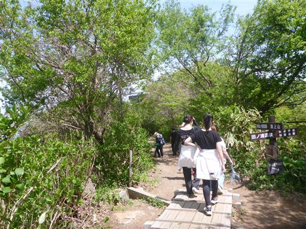
山のすぐ北側は日本海。水平線は霞んでいるが青い海が見下ろせる。
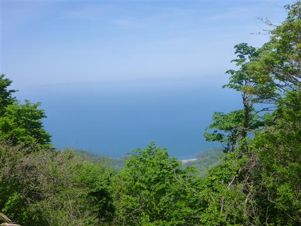
歩きにくい階段が続く。観光客には少々厳しそうだ。
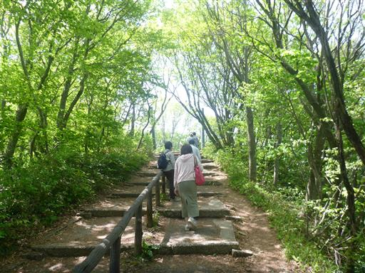
弥彦山山頂に到着。標高634m。
スカイツリーと同じ高さだ。
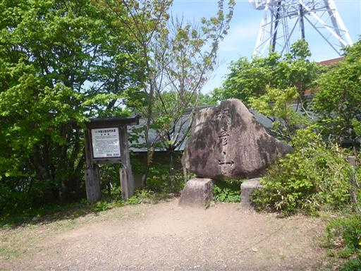
山頂にある奥の宮。

山頂は広々としているが、さほど展望は広がらない。
ここでおやつ休憩をとる。
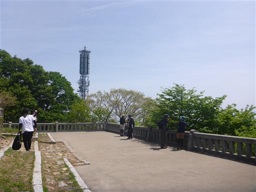
休憩をとったらロープウェイ乗り場の方に移動する。
こちらの建物はレストラン兼展望台だ。
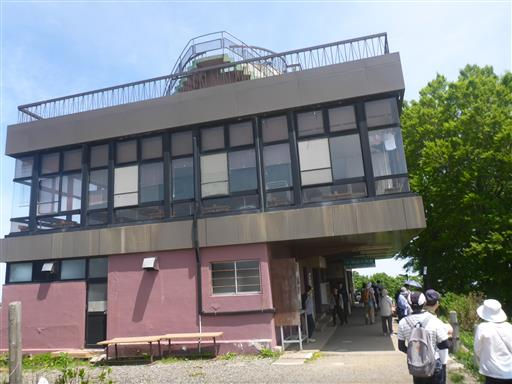
展望台に登る。
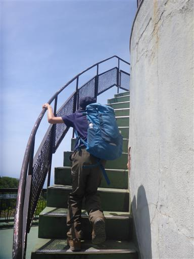
弥彦山のアンテナ群。
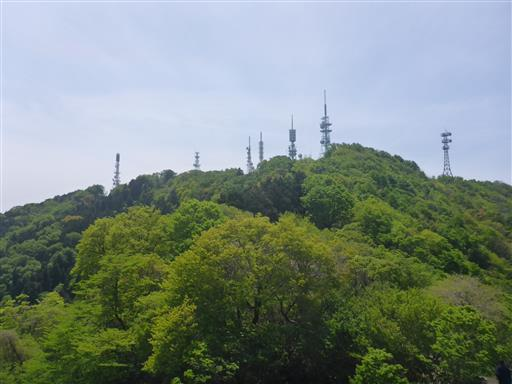
一際目を引くパノラマタワー。1970年に開館した古い施設だがまだ現役だ。
今回は時間がないのでパス。
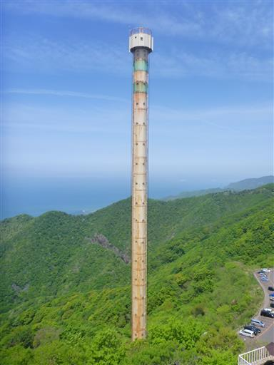
ここからでも十分に大展望が広がる。うっすらと佐渡島が見えている。
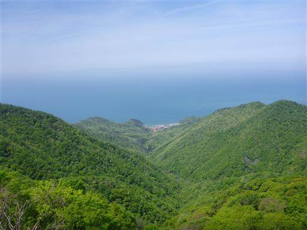
こちらはお隣の多宝山。山頂に気象レーダー観測所がある。
下には巨大な駐車場。ロープウェイを使わなくても車で登れるようだ。
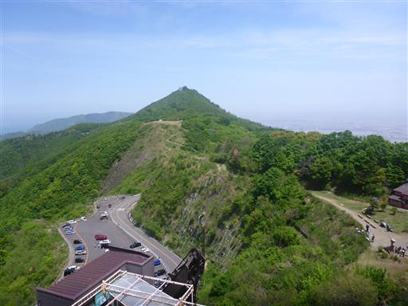
展望を楽しんだら下山。
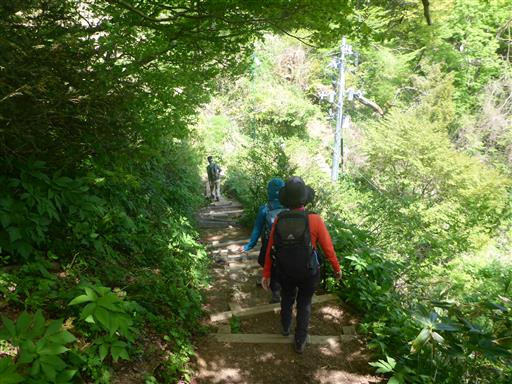
登山口にあるトトロのバス停。大トトロは驚くほど似ていない…
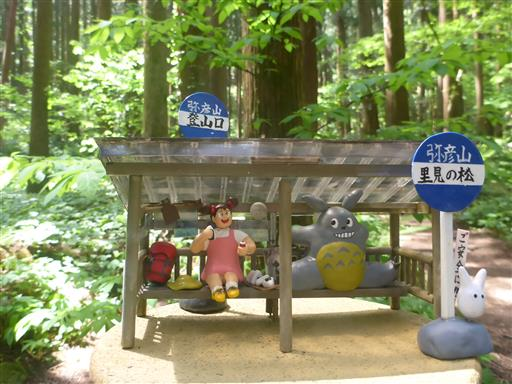
鳥居の横に、鳥居と同じ石で作られたテーブルとベンチがある。
ちょっと堅そうだ。石材が余ったのだろうか…
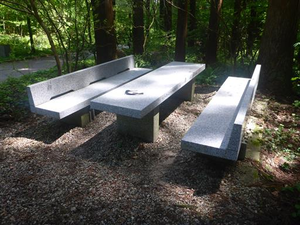
門前町。
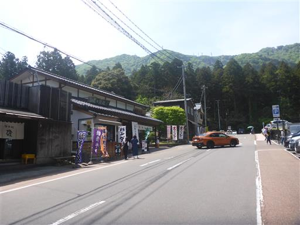
息子が蕎麦を食べたいといったため、蕎麦屋さんに入る。
客が多く店はてんてこまいだ。
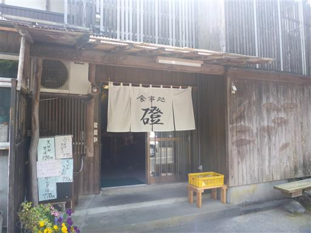
境内を通って駐車場に戻ることにする。こちらは一の鳥居。
こちらが表参道のようだ。
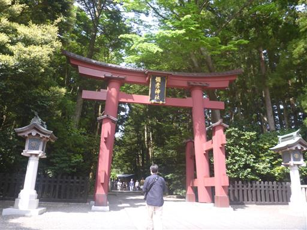
玉の橋。神様が渡る橋とのこと。
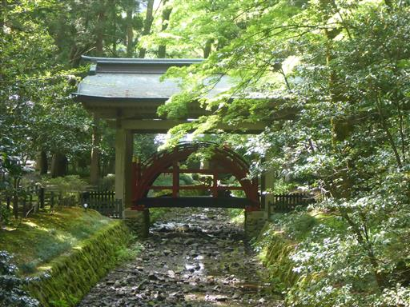
斜面が急すぎて人間には渡れなさそうだ。
これで観光はおしまい。帰宅する。
今回は2泊3日と短い旅行だったが、比較的天候に恵まれ
粟ヶ岳では素晴らしい展望を満喫することができた。
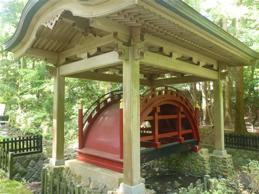